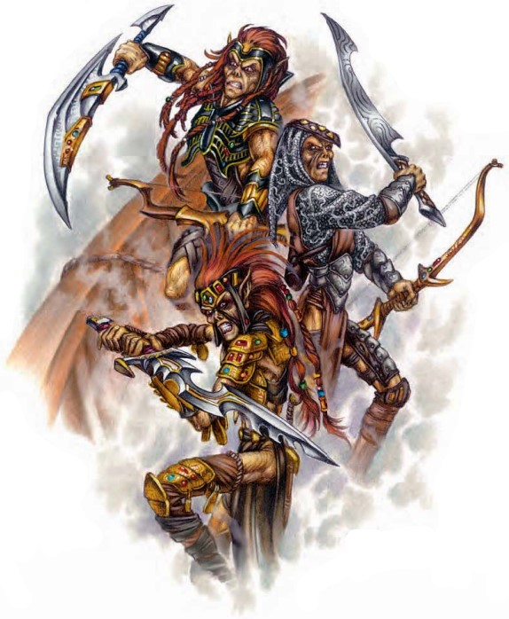

“叛乱是严重的罪行，我们的女王对此感到厌恶。叛乱的唯一借口是成功。”
―Zetch’r’r

新专长
吉斯洋基战斗施法者(GITHYANKI BATTLECASTER)
拥有此专长的生物可以忽略穿着轻甲时的奥术失败率。
先决条件：吉斯洋基人，能够施展2环奥术，基本攻击加值+3。
效果：该生物可以忽略因穿着任何种类的轻甲带来的奥术失败率。如果它穿着中甲、重甲或使用盾牌，则还是会受到奥术失败率影响。
特殊：战士或法师可以选择此专长作为职业奖励专长。
吉斯洋基骑龙者(GITHYANKI DRAGONRIDER)[种族]
拥有此专长的生物掌握了和红龙相处的诀窍。
先决条件：吉斯洋基人，骑术5级。
效果：该生物在应对红龙时交涉检定获得+2加值，骑乘红龙时骑乘检定获得+2加值。当该生物骑乘红龙时，它与它的坐骑的反射检定获得+1加值、AC获得+1洞察加值。
特殊：交涉检定加值与吉斯洋基人对红龙时的交涉种族加值叠加。吉斯洋基人战士可以选择此专长作为职业奖励专长。